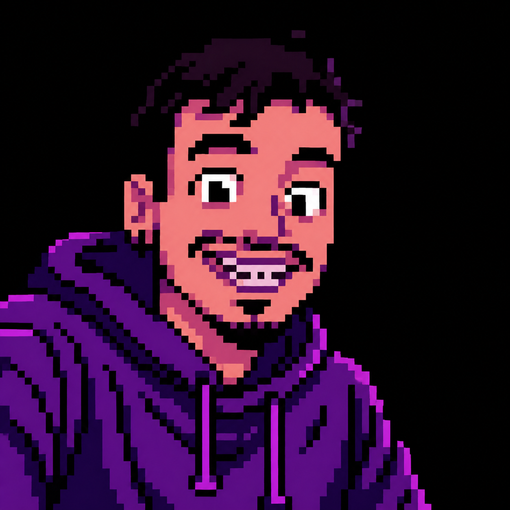

Desenvolvimento de sistemas para desktop e web, focados em performance, estabilidade e praticidade no uso real.
Trabalho com tecnologias como Delphi, ASP.NET e Visual Studio, utilizando bancos de dados como SQL Server, MySQL, PostgreSQL e SQLite.
Soluções pensadas para rodar de forma eficiente em ambientes Windows e Linux, transformando necessidades em sistemas sólidos e funcionais.
Desenvolvimento de aplicativos com foco em desempenho, usabilidade e experiência no uso real.
Utilizo tecnologias como Flutter para aplicações modernas e multiplataforma, além de Cordova em situações específicas.
Quando é necessário maior liberdade e controle, também utilizo Godot para criar soluções mais personalizadas e interativas.
Desenvolvimento de jogos com foco em diversão, criatividade e experiência do jogador.
Utilizo principalmente Godot para criar jogos mais completos e com maior liberdade de desenvolvimento.
Em alguns casos, também utilizo Flutter ou Cordova para projetos mais leves ou integrados a aplicações.